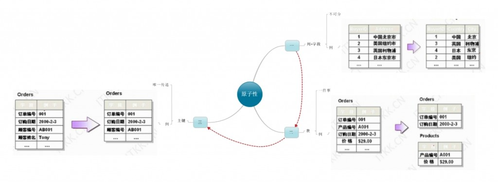
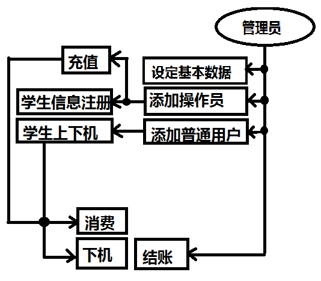
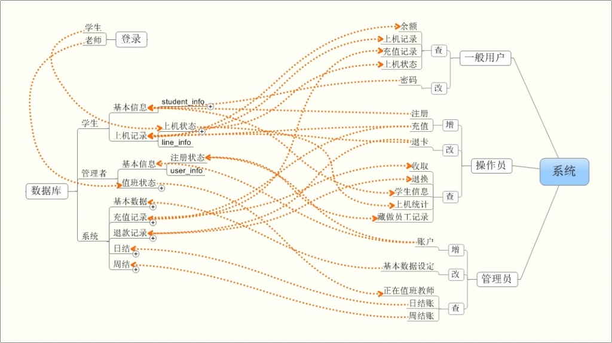

统筹规划，开始的时候是一个数学问题，在今天这个思想已经影响深远，程序设计也不例外，敲代码是最后一步，在这之前有很多事情要准备，借此说说程序设计之前的数据库那点事！
第一件事：战略篇——三范式的理解
一个程序不可避免涉及到数据库！而一个重要的前提思想总被人所提到！“三范式”，想看看一般的定义（稍后详解）：
1、第一范式（1NF）
在任何一个关系数据库中，第一范式（1NF）是对关系模式的基本要求，不满足第一范式（1NF）的数据库就不是关系数据库。
2、第二范式（2NF）
第二范式（2NF）是在第一范式（1NF）的基础上建立起来的，即满足第二范式（2NF）必须先满足第一范式（1NF）。第二范式（2NF）要求数据库表中的每个实例或行必须可以被唯一地区分。
3、第三范式（3NF）
满足第三范式（3NF）必须先满足第二范式（2NF）。简而言之，第三范式（3NF）要求一个数据库表中不包含已在其它表中已包含的非主关键字信息。
稍加总结我们发现，这些范式都在说一件事情，就是简单！把一个复杂的事情简单化！拆分到原子级别是理想的状态，因为这时，即保留了事物的完整性，又使其便于操作和区分!
简单解释：
第一范式：保留字段的原子特性。
举例说明：有一个字段为地址，其下内容为“中国上海”，仔细研究我们发现，这还可以拆分为“中国”和“上海”，难道要建立两个字段吗？答案是不唯一的！如果程序把“地址”里的内容作为整体来对待，那么无需拆分，如果要进行对比，比如最近的奥运会区分国籍，就应该分开！第一范式的原则是，系统能完整处理就可以！
第二范式：保留表的非他性
有一句通俗的话概括就是，一个表只做一件事！我们必须让表处理的内容统一化，且简单化！例如，有一个表内既有学生的基本信息，又有学生的借书信息，这个表是不合理的！尽量让事情简单，就是成功！
第三范式：保留主键的唯一性
简单概括，让表与表之间的关系简单，例如非学生基本信息表中有姓名，性别，年龄之类的字段，这是不合理的，我们可以在另外一个表中查到，用一个学号代替所有的信息就ok！
Mindmanager图形总结：

第二件事：战术篇——前期规划
了解三范式是不应该立刻做数据库设计的！还应该在这之前的工作是做一个系统大概的流程图，让自己的每一步操作所面临的表，绝不超过两个！让每件事情简单，就意味着让自己高效！这时上面所讲的分解就至关重要！
最好有一张图来整体认识数据库与系统间的各种关系一个一个调理让自己的眼睛和大脑活跃起来，找到一个平衡点！在你的系统复杂度和数据简单性之间的平衡点！这时分解的越接近“原子”，越能有效地完成工作！
第三件事：实战篇
以机房收费系统为例（没有接触到的朋友可以理解为，网吧收费系统），战略的层面是贯穿始终的，先看第一步：程序分解：
简单概要，并不是标准的：

做每一个操作的数据表对应图，确定每一步最多对应两个表！

然后就是sql语句
首先是保证各个部分不和系统表冲突：
use master
go
if exists (select * from dbo.sysdatabases where name = 'Charge')
drop database Student
GO
create database Charge
go
user Charge
go
if exists (select * from dbo.sysobjects where id = object_id(N'[dbo].[student_info]') and OBJECTPROPERTY(id, N'IsUserTable') = 1)
drop table [dbo].[student_info]
GO
if exists (select * from dbo.sysobjects where id = object_id(N'[dbo].[line_info]') and OBJECTPROPERTY(id, N'IsUserTable') = 1)
drop table [dbo].[line_info]
GO
if exists (select * from dbo.sysobjects where id = object_id(N'[dbo].[user_info]') and OBJECTPROPERTY(id, N'IsUserTable') = 1)
drop table [dbo].[user_info]
GO
if exists (select * from dbo.sysobjects where id = object_id(N'[dbo].[work_info]') and OBJECTPROPERTY(id, N'IsUserTable') = 1)
drop table [dbo].[work_info]
GO
if exists (select * from dbo.sysobjects where id = object_id(N'[dbo].[base_info]') and OBJECTPROPERTY(id, N'IsUserTable') = 1)
drop table [dbo].[base_info]
GO
if exists (select * from dbo.sysobjects where id = object_id(N'[dbo].[recharge_info]') and OBJECTPROPERTY(id, N'IsUserTable') = 1)
drop table [dbo].[recharge_info]
GO
if exists (select * from dbo.sysobjects where id = object_id(N'[dbo].[refunt_info]') and OBJECTPROPERTY(id, N'IsUserTable') = 1)
drop table [dbo].[refunt_info]
GO
if exists (select * from dbo.sysobjects where id = object_id(N'[dbo].[daily_checkout]') and OBJECTPROPERTY(id, N'IsUserTable') = 1)
drop table [dbo].[daily_checkout]
GO
if exists (select * from dbo.sysobjects where id = object_id(N'[dbo].[weekly_check]') and OBJECTPROPERTY(id, N'IsUserTable') = 1)
drop table [dbo].[weekly_check]
GO
CREATE TABLE [dbo].[student_info] (
[card_id] [int] NOT NULL ,
[student_id] [int] not NULL ,
[name] [char] (10) COLLATE Chinese_PRC_CI_AS NULL ,
[sex] [char] (4) COLLATE Chinese_PRC_CI_AS NULL ,
[department] [char] (10) COLLATE Chinese_PRC_CI_AS NULL ,
[grade] [char] (10) COLLATE Chinese_PRC_CI_AS NULL ,
[class] [char] (10) COLLATE Chinese_PRC_CI_AS NULL ,
[state] [char] (10) COLLATE Chinese_PRC_CI_AS NULL ,
[amount] [char] (20) COLLATE Chinese_PRC_CI_AS NULL ,
[about] [char] (50) COLLATE Chinese_PRC_CI_AS NULL
) ON [PRIMARY]
GO
CREATE TABLE [dbo].[line_info] (
[card_id] [int] NOT NULL ,
[online_date] [datetime] NOT NULL ,
[online_time] [datetime] NOT NULL ,
[offline_date] [datetime] NULL ,
[offline_time] [datetime] NULL ,
[cost] [money] NULL '
[computer_no] [char] (10) NOT NULL ,
[balance] [char] (10) COLLATE Chinese_PRC_CI_AS NULL ,
[amount] [char] (50) COLLATE Chinese_PRC_CI_AS NULL
) ON [PRIMARY]
GO
CREATE TABLE [dbo].[user_info] (
[user_id] [CHAR] (10) NOT NULL ,
[user_pwd] [char] (10) NOT NULL ,
[user_name] [char] (10) NOT NULL ,
[user_level] [char] (10) NOT NULL ,
) ON [PRIMARY]
GO
CREATE TABLE [dbo].[work_info] (
[user_id] [char] (10) NOT NULL ,
[onwork_date] [datetime] NOT NULL ,
[onwork_time] [datetime] NOT NULL ,
[offwork_date] [datetime] NULL ,
[offwork_time] [datetime] NULL ,
[computer_no] [char] (10) NOT NULL
) ON [PRIMARY]
GO
CREATE TABLE [dbo].[base_info] (
[hour_cost] [money] NOT NULL ,
[Incremental_time] [datetime] NULL ,
[least_time] [datetime] NULL
[ready_time] [datetime] NULL
[least_cost] [money] NULL
) ON [PRIMARY]
GO
CREATE TABLE [dbo].[recharge_info] (
[recharge_date] [datetime] (10) NULL ,
[recharge_timel_time] [datetime] NULL ,
[user_id] [int] NOT NULL
[card_id] [int] NOT NULL
[amount] [char] (50) COLLATE Chinese_PRC_CI_AS NULL
) ON [PRIMARY]
GO
CREATE TABLE [dbo].[refunt_info] (
[refunt_date] [datetime] NULL ,
[refunt_timel_time] [datetime] NULL ,
[user_id] [int] (10) NOT NULL
[card_id] [int] (10) NOT NULL
[amount] [char] (50) COLLATE Chinese_PRC_CI_AS NULL
) ON [PRIMARY]
GO
CREATE TABLE [dbo].[daily_checkout] (
[last_balance] [money] NULL ,
[now_add] [money] NULL ,
[now_cost] [money] NULL
[now_refunt] [money] NULL
[now_balance] [money] NULL
[date] [datetime] NULL
) ON [PRIMARY]
GO
CREATE TABLE [dbo].[weekday_checkout] (
[lastweek_balance] [money] NULL ,
[now_add] [money] NULL ,
[now_cost] [money] NULL
[now_refunt] [money] NULL
[now_balance] [money] NULL
[date] [datetime] NULL
) ON [PRIMARY]
GO
insert user_Info(user_ID,user_PWD,user_name,user_level)
VALUES('1','1','1','admin')
go
insert base_info(hour_cost)
VALUES('1')
go